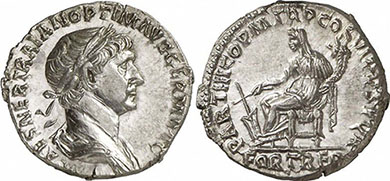

РТК | Деда Аврамов динар
 Skip to content Home Економија Друштво Политика Крагујевац Шумадија Спорт Култура Магазин Емисије Епицентар Комунални сервис Разговор с поводом Интервју Доживети стоту Мајстори кухиње 10 минута Суграђани Хероји мог града Шумадијски праг Размотавање Живот у боји Специјал РТК Култура Мозаик Путоказ за маме и тате Спортска хроника Сајамска хроника КОВИД-19 О нама Јавне набавке Избори 2020 документа Контакт Уживо ТВ Радио Крагујевац RSS Facebook Twitter Youtube 14.09.2020. Најновије Одржано предавање „Србија држава и црква, век уједињења“ Рукометашице Радничког се припремају за Супер лигу Коронавирус измениће и право Камени лав у Шумарицама пуни 105 година О нама Јавне набавке Избори 2020 документа Контакт Уживо ТВ Радио Крагујевац RSS Facebook Twitter Youtube
Home Економија Друштво Политика Крагујевац Шумадија Спорт Култура Магазин Емисије Епицентар Комунални сервис Разговор с поводом Интервју Доживети стоту Мајстори кухиње 10 минута Суграђани Хероји мог града Шумадијски праг Размотавање Живот у боји Специјал РТК Култура Мозаик Путоказ за маме и тате Спортска хроника Сајамска хроника КОВИД-19 Почетна Вести Економија Деда Аврамов динар
Деда Аврамов динар
25.01.2018 27.01.2018 РТКПрошле су тачно 24 године, откако је професор Драголав Аврамовић тадашњи гувернер Народне банке зауставио хиперинфлацију у Савезној Републици Југославији.
Он је прекинуо геометријску прогресију хиперинфлације, која је од свих грађана тада направила најсиромашније милијардере.
Економски стручњаци наглашавају да је данашњи динар настао на основама које је овај, признати службеник Светске банке утемељио.
Крагујевчани се и данас, попут већине сународника сећају периода пре и после Аврамовићевих монетарних реформи, док млађе генерације не знају ко је био популарни „деда Аврам“ незванично проглашен за једног од највољенијих Срба.
Две године, беснела је инфлација у Савезној Републици Југославији, од 92 до 1994. године. На годишњем нивоу достигла је невероватних 350 билиона процената.
Примљена зарада није успевала у вредности да издржи пут од радног места до куће, а за свежањ највреднијих новчаница од 500 милијарди динара могла је да се купи само гумица за косу.
Две деценије касније, сећање Крагујевчана на период када примљена зарада није успевала да издржи пут од радног места до куће и даље је свеже.
Све неприлике које могу да задесе једно друштво догодиле су се тада. Једино добро од тадашњих невоља су непревазиђени филмски, књижевни, музички, позоришни наслови. Док је свет развијао тржишну економију, СР Југославија развијала је своје рекорде.
Спасоносне економске потезе учинио је тадашњи стручњак Светске банке, Драгослав Аврамовић, који је увео нови динар.
После његових реформи, грађани Србије слатко су се окрепили чоколадама и бананама које су месец дана пре његових реформи изгледале као призор из бајке.
Народ је популарног деда Аврама волео, не само због успеха у монетарним реформама, већ и због тога што је био близак са грађанством.
Био је лидер „Савеза за промене“, код присталица опозиције први по рејтингу, а код Милошевићевих присталица други по поштовању и симпатијама.
Подржавао је студенте у протесту, био члан Српске академије наука и уметности, једном речју једноставан човек који је на једнотаван начин зауставио економску пропаст грађана.
Време празних рафова у продавницама, шверца, бонова и свакодневног невероватног сналажења данашњим генерацијама је незамисливо.
Само месец дана је било потребно да се осете резултати Аврамовићевог плана.
И то што је Аврамовић учинио 1994. године, утемељило је правац данашње српке економкске политике.
Данашњи динар успева да издржи све налете сурових закона економије. Инфлација већ седам година не прелази 3 одсто, што је сврстава у економски пожељне и добро контролисане.
Драгослав Аврамовић који је у својој завидној каријери стигао и до места директора светске банке, 1996. године је смењен са места гувернера Народне банке.
Умро је 2001. године у Америци. Популарни деда Аврам и данас је један од највољенијих Срба.
Извештава новинарка РТК Слађана Обрадовић.
Економија деда Аврам , динар , Драголав Аврамовић , СР Југославија , хиперинфлација
Кретање чланка
Previous Previous post: Оружари одржали штрајк упозорења Next Next post: Отворен Фестивал еколошког образовањаОставите одговор Одустани од одговора
Заштита од коронавируса
Најновије вести
Одржано предавање „Србија држава и црква, век уједињења“
Рукометашице Радничког се припремају за Супер лигу
Коронавирус измениће и право
Камени лав у Шумарицама пуни 105 година
https://youtu.be/-C7loiu5NSsНемате куда?
Изложба Ане Петровић у кући Ђуре Јакшића
Онлајн Џез фестивал у Крагујевцу
Економија
За подстицај пољопривредне производње 25 милиона динара
Повољности за послодавце за запошљавање особа са инвалидитетом
Илинденска улица биће безбеднија за возаче и пешаке
Доживети стоту
Доживети стоту: Коронавирус
Доживети стоту: Хипертензија
Доживети стоту: Дијабетес
Живот у боји
Живот у боји Шифра: фазан.Опасан
Живот у боји Чукни у дрво
Коронавирус
У Крагујевцу забрињавајућа епидемиолошка ситуација
Још 108 особа у Србији позитивно на коронавирус
У Шумадији 7 особа позитивно на Ковид 19
Смернице за особе са дијабетесом током Ковид-19 инфекције
Сервисне информације
Хаварија на магистралном водоводу
Крагујевац без нове депоније, ново постројење на постојећој
Акција преузимања електронског отпада
Хероји мог града
Хероји мог града: Дамјан Срејић
Хероји мог града: Мирослав Петрашиновић
Спорт
Рукометашице Радничког се припремају за Супер лигу
13.09.2020Трећа узастопна победа фудбалера Радничког 1923
12.09.2020Шумадијски праг
Шумадијски праг: Страгари
Шумадијски праг: Љуљаци
Епицентар
Епицентар: градоначелник Радомир Николић
Епицентар: др Предраг Саздановић
Комунални сервис
Комунални сервис: Војин Вранић, начелник комуналне инспекције
06.09.2020Комунални сервис: Владимир Максимовић
28.08.2020Култура
Мина Мијовић пред публиком у родном граду
Почиње нова сезона у Позоришту за децу
Крагујевачки симфонијски оркестар добио је тимпане
Спорт
Рукометашице Радничког се припремају за Супер лигу
Трећа узастопна победа фудбалера Радничког 1923
Крагујевчанка Снежана Ђурић наступаће за тим из Шведске
Друштво
Одржано предавање „Србија држава и црква, век уједињења“
Коронавирус измениће и право
Камени лав у Шумарицама пуни 105 година
Пратите нас
2020© Радио телевизија Крагујевац О нама Контакт Уживо